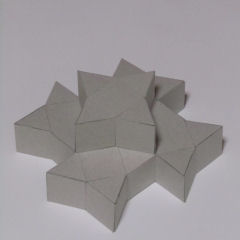
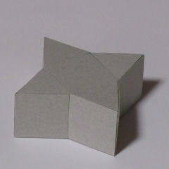
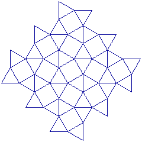

The Ninja Hut
ニンジャハット
地上部の構成
地上一階
青龍の間、朱雀の間、
白虎の間、玄武の間、
四つの部屋で構成される。
地上二階
黄麟の間のみで構成される。
各部屋で、五遁術を
マスターする。
五遁術
木遁術 林に紛れる。
火遁術 閃光と煙で幻惑。
土遁術 土中に隠れる。
金遁術 詳細不明。
水遁術 水中に潜む。

作図 Cinderella.2
地下一階
地下迷宮――ダンジョンを
攻略する。
地下二階以降は
生環者が実存しないために
その構造は謎のままである。
しかし、多数の研究者は
全体構造は、
ピラミッド型に
なっているはずだと
推測している。
参考文献
デザイン脳を開く
宮宇地一彦 著
建築デザインの
アイデアとヒント４７０
毎週住宅を作る会 著
トラップ・コレクション
安田均／グループＳＮＥ 著
赤緑黒白
森博嗣 著